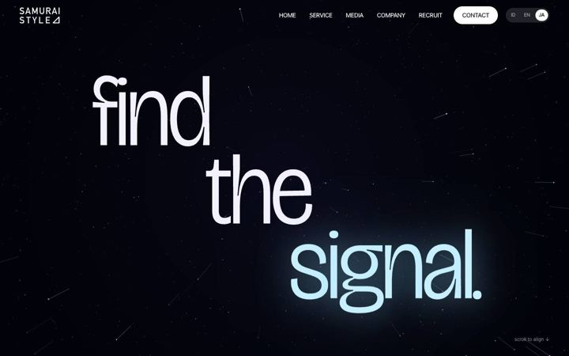

トップ本線 v2
開く ↗FVは今の宇宙のまま、STORYは画面固定の7場面を縦書き（暗い面＋ぼかしの上）にして全場面を動く絵に（手の切り替え／製図の枝分かれ／砂嵐のテレビ／Noise→Signalの文字／ゼロサム→プラスサムの円／板が1本の橋になる／製図の輪）。夜明けの切り替えで生成りの製図台に移り、見出しは細く縮んだ字から太く伸びて出る。FEATURES・MEMBER・CONTACT・フッターは製図の生成アート（MEMBERは点の網目から組み上がって白黒写真になり、乗せると色）。

参考にしたサイト
- index.html（今のトップ） FV（宇宙・find the signal.・説明文まで）、場面1の手の切り替え（.repl とマスク）、場面3の砂嵐テレビ（.tv）、夜明けの切り替え、SERVICE をコードごと移植
- c-story-2.html 画面固定で全面の場面が入れ替わる型と、場面番号1〜7の進み具合の線
- c-all-gen.html（poolside を写した製図台） 場面2のエントロピーの枝分かれ（STORYの同じ文の製図）を暗い紺＋生成りの線＋朱1点に。FEATURESの4つの模様、MEMBERの網点、CONTACTの波形、フッターの走査線、パネル角の＋印
- c-all-type.html 見出しの Roboto Flex で wdth 25→151・wght 100→900 に伸びる動き、場面4の崩れ・ずれ・にじみ→揃う文字と Noise/Signal のメーター